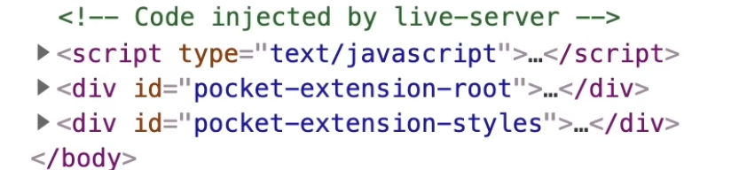
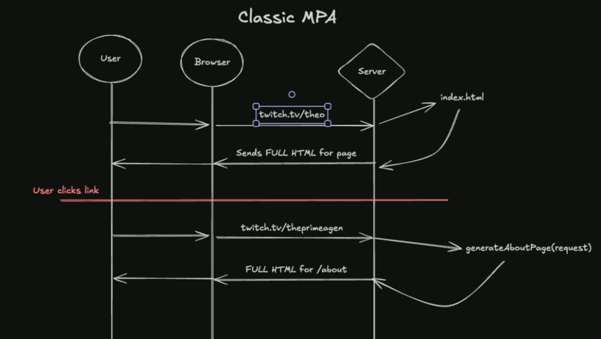
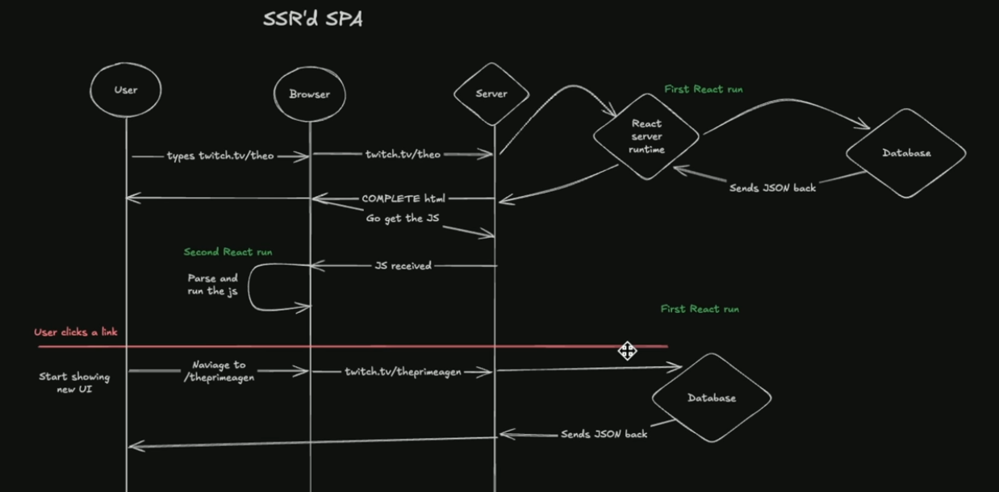

WebDev
Hosting
Routing
-
If you host static files on a normal HTTP server (e.g. Nginx, GitHub Pages, Netlify), the server handles routing automatically by matching URLs to files on disk. You don’t implement routing logic yourself.
-
"But what if I want to host my own site?"
-
Then you must provide the routing layer yourself.
-
Options:
-
Use an existing server
-
e.g. Nginx, Caddy, Apache. Configure it to serve your static files. Routing (path → file) is handled automatically.
-
-
Write your own HTTP server
-
Parse the HTTP request.
-
Extract the path.
-
Map it to a file in your directory (e.g.
/about→./public/about.html). -
Send correct status codes and headers.
-
-
-
 .
-
Live Server, VSCode.
GitHub Pages
-
404.htmlfor a custom 404 page. Useful for SPAs as a client-side fallback. There is a known SPA limitation: direct requests to client-side routes will return 404 unless you implement a 404→index.html redirect script or use a different host that supports rewrites. That workaround can cause an initial 404 status and SEO/UX issues. -
CNAMEfile or repository settings if you want a custom domain. Also set DNS records at your registrar.
.nojekyll
-
You need to be explicit about not using Jekyll.
-
Even if you’re not using Jekyll, GitHub Pages will try to run Jekyll by default.
-
Once
.nojekyllis committed and pushed, GitHub Pages will serve_index.htmland any other files or folders starting with_correctly.
Rendering Architectures
Server-side Rendering (SSR)
Advantages
-
Fast first paint: Browser receives ready HTML, so content appears immediately.
-
SEO-friendly: Crawlers can index without running JS.
-
Better performance on low-end devices: Rendering work done server-side.
-
Predictable behavior: Consistent output independent of client environment.
Disadvantages
-
Higher server load: Each request triggers a render.
-
Slower navigation between pages: Full or partial reloads unless hybridized.
-
Complex state management: Keeping client and server states in sync requires hydration.
-
More infrastructure complexity: Balancing caching, streaming, and SSR latency.
Client-side Rendering (CSR)
Advantages
-
Less server load after initial page delivery.
-
Dynamic UI updates without reloads.
-
Smooth navigation once the app is loaded (SPA feel).
Disadvantages
-
Slow initial load: The browser must download JS, parse it, and then render. Until that, the user sees nothing.
-
SEO issues: Search engines struggle or delay indexing JS-rendered content.
-
Poor performance on weak devices: Rendering and hydration cost CPU and memory.
-
Accessibility and fallback failures: No JS = no content.
-
Complex caching and debugging: Harder to reason about compared to static or SSR models.
Classic MPA (Multi-Page App)
-
 .
-
The page could be either static
index.html, or it could be generated with a function, based on parameters of the request. -
The entire page at once.
-
When you click a link, you don't have any indication that something is going on, other than the loading bar at the top of the browser. You'll have to wait until the server gives back a response, for you to see something new.
Classic SPA (Single-page App)
-
 .
.
-
You don't get the full page after a request, but a skeleton HTML.
-
This HTML is going to have a
scripttag in it. -
The HTML is the same regardless of the page you are into.
-
"It's not just one API call. The amount of API calls performed are insane, like dozens, hundreds."
-
You can see the API calls made in the Network tab.
-
 .
.
-
"When you have the ability to do everything on the client, you start to".
-
When
navigate to /theprimeagenhappens, the browser immediately generates a new page, like a spinning wheel. -
This is cool, but surely has a lot of bloat until then. It's not for everything and it's not for everyone.
SSR'd SPA (Server-Side Rendered Single-Page App) / Full SSR
-
A soft-evolution of SPA.
-
 .
-
It does a thing called hydration : it re-run the same React code so that your React can link up to the right places in the HTML.
-
Possible problems :
-
If you press a button before a button is hydrated, the button will do nothing.
-
The framework Qwik thinks hydration is the root of all evil and wants to eliminate it.
-
-
You might have to send data twice. One for the HTML, and another for the React code. This is done so if a text had a button on it, you'll need the JS to do stuff. In some cases you just have text, and therefore this is unnecessary.
-
There's a lot of benefits of the HTML having the content, but if it has a ton of content that doesn't change while you're at the page, you are just loading a bunch of things that don't belong to JS.
-
-
-
This method gives you the best of MPA and SPA, but also you get the worst of both.
-
There are problems with Next.js, etc.
-
-
Good, not great.
SPA-Influenced Isomorphic (Single-Page App Influenced Isomorphic)
-
An evolution of SSR'd SPA / Full SSR.
-
 .
.
-
 .
.
-
You have the benefit of having a SPA effect of clicking something and immediately seeing the result, due to client-side rendering, as well as having the benefit of not having to send JSON of all different ways to render to the client.
-
Instead of sending the giant pile of JavaScript that has all possible state your UI can be in and the JSON you actually need to do that render, you can just send the HTML.
-
This is what makes HTMX so magical. The server is not sending JSON down to the browser to transform into HTML, it just sends the right HTML. That's really cool.
-
You get the immediate navigation of the SPA. You get the HTML-first development of an MPA and you get a developer experience where you don't feel like you are fighting between these two different things.
-
Possible problems :
-
You no longer have the SPA design where every page resolves into the same HTML file. You now have to have backend code running React. You cannot use this model if you are not using React on the server that resolves the entire website and every url.
-
MPA-Influenced Split-Execution (Multi-Page App Influenced Split-Execution) / Server Island MPA
-
 .
.
-
I didn't quite understand it.
-
CDN, Vercel, etc.
Asynchronous Behavior
-
Using this HTML as an example :
<div id="widget1">Widget 1</div>
<div id="widget2">Widget 2</div>
<div id="widget3">Widget 3</div>
<div id="status"></div>
Java Script
const widgets = [
{ id: "widget1", url: "/data1" },
{ id: "widget2", url: "/data2" },
{ id: "widget3", url: "/data3" },
];
const status = document.getElementById("status");
let completed = 0;
widgets.forEach(w => {
const el = document.getElementById(w.id);
el.innerHTML = "Loading...";
fetch(w.url)
.then(res => {
if (!res.ok) throw new Error("Network error");
return res.text();
})
.then(html => {
el.innerHTML = html;
})
.catch(err => {
el.innerHTML = "Error loading widget";
console.error(err);
})
.finally(() => {
completed++;
if (completed === widgets.length) {
status.innerHTML = "Dashboard loaded";
}
});
});
-
fetch()-
Is asynchronous , but the JS runtime is single-threaded .
-
The browser’s networking stack handles the request in the background using OS threads or the network stack.
-
JS does not block — it registers a callback (the
.then) to be executed later , when the network response arrives. -
You don’t control threads directly; the browser runtime schedules your callbacks on the event loop.
-
-
.then()-
Attaches a callback function (a lambda) to the Promise returned by
fetch(). -
When the Promise resolves (the HTTP request finishes), the JS engine calls this lambda with the response (
res).
-
-
Chaining
.then()-
return res.text()returns another Promise (it's asynchronous). The next.then()in the chain automatically waits for that Promise to resolve. -
In other words: each
.then()schedules the next step. -
The next lambda runs after the previous Promise (
res.text()) resolves. -
Whatever this lambda returns (or doesn’t) is automatically wrapped in a new Promise.
-
JS chains Promises internally, so the next
.catch()or.finally()knows when this step completes. -
The lambda inside the first
.thencan be synchronous or asynchronous . -
If you do just
console.log(res), it’s synchronous. -
If you return a Promise (
res.text()), the next.thenwaits for that Promise to resolve. -
Rule of thumb:
-
If you return a Promise inside a
.then, the next.thenis delayed until that Promise resolves . -
If you return a plain value, it passes immediately to the next
.then.
-
-
Chaining is only needed when the previous step produces a Promise (i.e., an async result).
-
-
.catch()-
If any previous Promise in the chain rejects (network failure, or you
throwinside a.then()), this lambda is executed. -
Equivalent in C to checking
if (!ok)and jumping to the error handler for that thread. -
JS handles the propagation of errors through the chain automatically.
-
-
.finally()-
Always runs after the chain settles, success or failure .
-
Equivalent to your “finally” block in C after the thread finishes, updating counters and printing “Dashboard loaded.”
-
Soft-Equivalence in C, using many threads
#include <stdio.h>
#include <stdlib.h>
#include <pthread.h>
#include <string.h>
// Simulated HTTP request
int fetch(const char* url, char** response) {
// pretend network request
if (strcmp(url, "/fail") == 0) return 0; // simulate error
*response = strdup("HTML content");
return 1; // success
}
// Shared state
int completed = 0;
pthread_mutex_t lock = PTHREAD_MUTEX_INITIALIZER;
const int total_widgets = 3;
// Thread function to simulate async fetch
void* fetch_widget(void* arg) {
const char* url = (const char*)arg;
char* html = NULL;
// Step 1 & 2: fetch and check response
int ok = fetch(url, &html);
if (ok) {
// Step 3: update DOM (simulated)
printf("%s: %s\n", url, html);
} else {
// Step 4: catch
printf("%s: Error loading widget\n", url);
}
// Step 5: finally
pthread_mutex_lock(&lock);
completed++;
if (completed == total_widgets) {
printf("Dashboard loaded\n");
}
pthread_mutex_unlock(&lock);
free(html);
return NULL;
}
int main() {
const char* widgets[3] = {"/data1", "/data2", "/data3"};
pthread_t threads[3];
// Launch all requests in parallel
for (int i = 0; i < 3; i++) {
pthread_create(&threads[i], NULL, fetch_widget, (void*)widgets[i]);
}
// Wait for all threads to finish
for (int i = 0; i < 3; i++) {
pthread_join(threads[i], NULL);
}
return 0;
}
-
C threads were just a visual analogy for concurrency, not a literal one-to-one comparison.
-
In C, network requests are blocking by default. This C example used threads to simulate concurrent network requests.
-
A more faithful comparison would be C using non-blocking async I/O (e.g.,
libuv,epoll) instead of threads, but that’s more complex and less intuitive.
Equivalence in C, using concurrency with
libuv
#include <stdio.h>
#include <stdlib.h>
#include <uv.h>
int completed = 0;
const int total_widgets = 3;
// Simulated async HTTP request
void async_fetch(uv_loop_t* loop, const char* url, void (*callback)(const char*, int)) {
// Use a timer to simulate network latency
uv_timer_t* timer = malloc(sizeof(uv_timer_t));
uv_timer_init(loop, timer);
timer->data = (void*)url;
uv_timer_start(timer,
(uv_timer_cb) (void (*)(uv_timer_t*)) [](uv_timer_t* t) {
const char* url = (const char*)t->data;
int success = 1; // simulate success/failure
if (strcmp(url, "/fail") == 0) success = 0;
callback(url, success);
uv_timer_stop(t);
free(t);
},
rand() % 1000, // simulate network delay
0
);
}
// Callback after each request
void on_fetch_complete(const char* url, int success) {
if (success) {
printf("%s: HTML content\n", url);
} else {
printf("%s: Error loading widget\n", url);
}
completed++;
if (completed == total_widgets) {
printf("Dashboard loaded\n");
}
}
int main() {
uv_loop_t* loop = uv_default_loop();
const char* widgets[3] = {"/data1", "/data2", "/data3"};
for (int i = 0; i < 3; i++) {
async_fetch(loop, widgets[i], on_fetch_complete);
}
uv_run(loop, UV_RUN_DEFAULT);
return 0;
}
-
async_fetch()-
Simulates an HTTP request using a non-blocking timer.
-
-
on_fetch_complete()-
Acts as the callback, similar to a
.then()in JS.
-
-
Requests are all started immediately and run concurrently in the event loop, without spawning separate OS threads.
-
When each request “finishes,” its callback executes on the main thread, just like JS Promises execute on the event loop.
-
We track
completedto know when all requests are done, analogous to.finally()in JS.
AJAX Request (Asynchronous JavaScript and XML)
-
The name is historical, but is often used with JSON/HTML instead of XML.
-
AJAX request is essentially an HTTP request , but with a specific context and behavior.
-
AJAX is not a new protocol; it’s a technique to send HTTP requests asynchronously and handle responses in JS without full page reload.
-
Modern AJAX is usually done with
fetch()or libraries like Axios. -
HTMX uses AJAX under the hood when it issues
hx-get,hx-post, etc., but wraps it in HTML declaratives. -
Pros :
-
Asynchronous → page stays responsive.
-
Fetch only needed data → reduces bandwidth compared to full reloads.
-
Enables SPA-style apps and partial updates.
-
-
Cons :
-
Caching: AJAX responses may bypass browser caching unless managed.
-
Error handling: Must handle network errors manually; normal navigation leaves error pages to the browser.
-
SEO: Search engines may not execute JS; AJAX-loaded content can be invisible unless server-side rendering is used.
-
History / bookmarking: AJAX alone doesn’t update URL; need
pushStatefor proper navigation. -
Browser support: Modern browsers fully support fetch/XHR; very old browsers may not.
-
-
AJAX is safe and standard in modern browsers, but it does not magically solve rendering, routing, or SEO problems.
-
It’s a tool for asynchronous HTTP and DOM updates.
Which type of Request is being made? HTTP or AJAX
-
HTTP Request :
-
Is triggered by a standard link or form submission.
-
Dev Tools -> Network tab: Requests labeled Document are normal page navigations.
-
-
AJAX Request :
-
Is triggered by JavaScript (
fetch(),XMLHttpRequest, HTMX, Axios, jQuery.ajax). -
Dev Tools -> Network tab: Requests labeled XHR / Fetch are AJAX.
-
AJAX and SPAs
-
AJAX is in large part the core of SPA apps.
-
SPAs rely on:
-
AJAX requests to fetch new data or HTML fragments.
-
Client-side routing to change the view without reloading the page.
-
DOM updates handled by JS frameworks (React, Vue, etc.) rather than the browser’s default page reload.
-
-
AJAX is the mechanism SPAs use to asynchronously fetch server data. Without it, a SPA can’t update content dynamically without a full reload.
AJAX and URLs
-
Changing the URL is separate from AJAX.
-
SPAs often use
history.pushState()to update the URL without reloading. -
You can make an AJAX request that changes the DOM but does not change the URL.
-
You can also do a normal navigation that doesn’t fully reload if the server returns the same HTML (rare).
-
The DOM update is the true technical difference; URL is mostly a UX/consistency concern.
Usage of AJAX
-
Any framework doing partial DOM updates without full reload uses AJAX.
-
See JavaScript for information on how frameworks and libraries interact with AJAX.
Normal HTTP Request vs AJAX Request
-
The key distinction is whether the browser fully reloads the DOM.
Normal HTTP request
-
Browser navigates to a new page.
-
Full page reload → all DOM replaced, browser re-parses HTML.
-
Ex1 :
<form action="/data" method="GET"> <input name="q"> <button type="submit">Search</button> </form>-
Clicking the button navigates to
/data?q=.... -
Whole page reloads.
-
AJAX request (fetch)
-
Browser stays on the current page and handles the response via JS.
-
Partial DOM update → only certain elements replaced via JS.
-
Ex1 :
const res = await fetch("/data?q=test"); const html = await res.text(); document.getElementById("result").innerHTML = html;-
Sends GET to
/data?q=test. -
Page does not reload .
-
Only updates
#resultdiv.
-
DOM (Document Object Model)
-
A DOM tree is an in-memory representation of a document.
-
DOM trees contain several kinds of nodes, in particular a DocumentType node, Element nodes, Text nodes, Comment nodes, and in some cases ProcessingInstruction nodes.
-
About :
-
The DOM is a tree representation of the structure of an HTML or XML document loaded in the browser.
-
It allows languages like JavaScript to read, modify, and manipulate the page's content, structure, and style dynamically.
-
Every visual modification via JS uses the DOM.
-
It can be accessed via a bridge from WASM.
-
-
It provides functions to manipulate structure.
-
W3C standard: documented and supported by all browsers.
-
-
Concept :
-
When the browser loads an HTML file, it builds a tree of objects that reflect the page elements.
-
Each element (like
<div>,<p>,<img>, etc.) becomes a node in the tree. -
The tree starts at
documentand continues withdocument.body,document.body.children, etc.
-
-
Example :
-
HTML:
<html> <body> <h1>Hello</h1> <p>World</p> </body> </html> -
Resulting DOM (simplified structure):
document └── html └── body ├── h1 (text: "Hello") └── p (text: "World")
-
-
How it's used :
-
Read :
let text = document.querySelector("h1").textContent; // text = "Hello" -
Modify :
document.querySelector("p").textContent = "Changed!"; -
Create :
let div = document.createElement("div"); div.textContent = "New Div"; document.body.appendChild(div);
-
Virtual DOM (VDOM)
-
"Re-render everything and act like it's optimized".
Fingerprinting
-
Is a unique hash added to a file’s name (or query string) so browsers know when the file has changed.
-
Example:
-
app.css→app.3f91c2.css
-
-
The HTML must point to the exact hashed filenames produced by your build.
-
If the file is named
studies-index.76216.csson disk, that is what the HTML must reference.
-
-
On every deploy, if the hash changes, the HTML needs to be updated to point to the new name.
-
This is why most setups use a build step or template system that injects the correct filenames automatically.
-
-
You can’t keep
name.cssand expect caching to invalidate when content changes. The hash name is the cache-busting mechanism. -
Working example:
<link rel="stylesheet" href="/static/studies-index.76216.css">
<script src="/static/studies.76216.js"></script>
Service Workers (SW)
-
A JS worker that runs between the browser and network.
-
Can intercept requests, serve cached responses, enable offline pages, and run background tasks (push, sync).
-
Requires HTTPS (or localhost for dev).
-
Adds complexity and subtle bugs. Caching logic is error-prone and easily serves stale pages to visitors.
-
You must design update semantics (skipWaiting, cache versioning) or users will see old assets.
-
Debugging and lifecycle issues consume time.
-
Not needed if you do not need offline access or push notifications.
-
SW could be useful if:
-
You want offline reading for notes.
-
You want to present a snappy cached shell for repeat visitors.
-
You plan to add a PWA experience or push notifications.
-
Progressive Web App (PWA)
-
A PWA is a website designed to behave like a native app.
-
Key idea: web technology plus a few extras lets users install the site, run it offline, and get app-like UX.
-
Core pieces
-
Service Worker. Intercepts requests and enables offline caching.
-
Web App Manifest. A JSON file that defines name, icon, start URL, display mode, and version.
-
HTTPS. Required for Service Worker and installability.
-
Responsive UI and fast load time.
-
-
Common benefits
-
Installable on home screen.
-
Offline or flaky-network support.
-
Push notifications and background sync if implemented.
-
App-like startup and fullscreen modes.
-
-
Adds complexity. Caching logic can serve stale content if not managed.
-
Requires careful versioning and cache invalidation.
-
Extra maintenance for icons, manifest fields, and update flow.
-
When to use
-
Good for sites that need offline access or frequent repeat interactions.
-
Good for apps where installability and push matter.
-
SEO (Search Engine Optimization)
Sitemap
-
Sitemap helps search engines find your pages.
-
Purpose: tell crawlers which URLs exist and when they last changed.
-
Typical file:
sitemap.xmlat site root. -
Entries contain:
loc(canonical URL),lastmod(ISO 8601 date), optionalchangefreqandpriority. -
Effect on SEO: helps discovery and crawling. It does not improve ranking by itself. It reduces the chance a crawler misses pages.
-
Generation: after you collect
Contentobjects, write an XML list ofloc+lastmod. Use file mtime or frontmatter date forlastmod.
RSS / Atom (Resource Descriptor Framework Site Summary)
-
RSS .
-
Allows users and applications to access updates to websites in a standardized, computer-readable format. Subscribing to RSS feeds can allow a user to keep track of many different websites in a single news aggregator, which constantly monitors sites for new content, removing the need for the user to manually check them. News aggregators (or "RSS readers") can be built into a browser, installed on a desktop computer, or installed on a mobile device.
-
RSS/Atom lets feed readers and users subscribe.
-
Purpose: provide a feed of recent content users or services can subscribe to. Useful for readers, aggregator sites, and syndication.
-
RSS vs Atom: both are XML feed formats. RSS is very common; Atom is a newer spec with slightly different fields. Either is fine. Pick RSS for simplicity.
-
Typical feed fields per item:
title,link,id/guid,pubDate/updated,description/content(often full HTML). Include permalink and date. -
Effect on SEO: not directly tied to ranking. It helps distribution and repeat traffic. Search engines may discover content via feeds but that is secondary.
Template-in-HTML vs Markup-as-Code
-
I want static.
-
Maybe HTMX is overkill for that and requires me to think if I use templates or markup-as-code.
-
I can maybe run away from JS, but there's no running from HTML and CSS.
-
I need to learn HTML, regardless if I use Hugo, or Odin + HTMX or Odin + Templating, or something hybrid.
-
I imagine that if I want an easy front-end, I would go for templating, and therefore, Hugo.
-
If I want templating, why would I consider doing something myself, in Odin?
-
Hugo does things for me, but I don't like how opaque things can be, or how I have to follow the conventions defined by Hugo, without really knowing what happens.
-
So, Hugo hides the backend, and hides how the front-end is built, inside layers of documentation.
-
If I expose the backend with Odin, I could understand everything.
-
-
What would be needed, if I choose to make a backend in Odin:
-
HTTP routing.
-
Support for the templating used by Go.
-
Parsing of the Markdown file, so its used correctly by the templating service.
-
A way that I can open a server.
-
Could my
game_netlibrary do that? I think so.
-
-
-
I don't want to use WASM. I lose themes and convenience. Performance may not be optimal. Over complicates with Odin, while being opaque and with no front-end.
Template-in-HTML Engines
-
Uses declarative HTML files (or partials) with embedded logic (templating syntax).
Etc
HTMX
-
HTMX .
Alpine Ajax
Alpine.js
Jinja2 Family
{% for u in users %}
<li>{{ u }}</li>
{% endfor %}
Temple (Odin)
Go Templates
-
Server-side only, but outputs static HTML usable client-side.
-
Hugo uses it.
<ul>
{{ range .Pages }}
<li><a HREF="{{ .RelPermalink }}">{{ .Title }}</a></li>
{{ else }}
<li>No pages</li>
{{ end }}
</ul>
-
"Functionally similar to Jinja2 but in Go."
Plush (Go)
-
Mimics Jinja2.
Pongo2 (Go)
-
Server-side.
-
Mimics Jinja2.
Nunjucks (Node.js)
-
Client-side.
-
Mozilla’s Jinja2 port for Node.js.
const nunjucks = require("nunjucks");
const env = new nunjucks.Environment();
const template = `
<ul>
{% for u in users %}
<li>{{ u }}</li>
{% endfor %}
</ul>`;
console.log(env.renderString(template, { users: ["Alice", "Bob"] }));
Jinja2 (Flask/Django Template)
-
Server-side.
-
Original source of the style (
{% for %},{{ var }}).
# app.py
from jinja2 import Template
template = Template("""
<ul>
{% for u in users %}
<li>{{ u }}</li>
{% endfor %}
</ul>
""")
print(template.render(users=["Alice", "Bob"]))
Twig (PHP)
-
Server-side.
-
Direct port of Jinja2; nearly identical syntax.
<?php
require_once '/path/to/vendor/autoload.php';
$loader = new \Twig\Loader\ArrayLoader([
'list' => '<ul>{% for u in users %}<li>{{ u }}</li>{% endfor %}</ul>',
]);
$twig = new \Twig\Environment($loader);
echo $twig->render('list', ['users' => ['Alice', 'Bob']]);
Pebble (Java)
-
Server-side.
-
Jinja2-inspired syntax for Java.
Liquid Family
-
Liquid was directly inspired by Jinja2, but the design goals differ.
-
Main distinction: Liquid is safe and restricted, Jinja2 is powerful and programmable.
{% for u in users %}
<li>{{ u.name }}</li>
{% endfor %}
Liquid (Go)
-
Server-side.
-
Port with near-identical tags.
package main
import (
"fmt"
"github.com/osteele/liquid"
)
func main() {
tmpl := liquid.NewTemplate(`
<ul>
{% for u in users %}
<li>{{ u }}</li>
{% endfor %}
</ul>`)
out, _ := tmpl.Render(map[string][]string{"users": {"Alice", "Bob"}})
fmt.Println(out)
}
Liquid (Ruby)
-
Server-side.
-
Canonical version.
Liquid-php (PHP)
-
Server-side.
-
Syntax and filters same as Ruby’s version.
Mustache Family
<ul>
{{#users}}
<li>{{name}}</li>
{{/users}}
</ul>
odin-mustache (Odin)
Mustache (Go - hoisie/mustache)
-
Server-side.
package main
import (
"fmt"
"github.com/hoisie/mustache"
)
func main() {
tpl := "<ul>{{#users}}<li>{{.}}</li>{{/users}}</ul>"
html := mustache.Render(tpl, map[string][]string{"users": {"Alice", "Bob"}})
fmt.Println(html)
}
Mustache (Go - broglie/mustache)
-
Server-side.
Handlebars (JavaScript Node.js)
-
Client-side.
const Handlebars = require("handlebars");
const source = `
<ul>
{{#each users}}
<li>{{this}}</li>
{{/each}}
</ul>`;
const template = Handlebars.compile(source);
console.log(template({ users: ["Alice", "Bob"] }));
Mustache.js (JavaScript)
-
Client-side.
-
Logic-less templates.
pystache (Python)
-
Server-side.
-
Compatible implementation.
mustache.java (Java)
-
Server-side.
-
Official Java port.
mustache.php (PHP)
-
Server-side.
-
Official PHP port.
mustache.rb (Ruby)
-
Server-side.
-
Original reference version.
Embedded Code Families
<ul>
<% users.each do |u| %>
<li><%= u %></li>
<% end %>
</ul>
-
Pattern
<% code %>and<%= output %>.
EJS (Node.js)
-
Client-side.
// index.js
const ejs = require("ejs");
const template = `
<ul>
<% users.forEach(u => { %>
<li><%= u %></li>
<% }) %>
</ul>`;
const html = ejs.render(template, { users: ["Alice", "Bob"] });
console.log(html);
ERB (Ruby on Rails)
-
Server-side.
require "erb"
template = <<~ERB
<ul>
<% users.each do |u| %>
<li><%= u %></li>
<% end %>
</ul>
ERB
puts ERB.new(template).result_with_hash(users: ["Alice", "Bob"])
PHP (native templates)
<ul>
<?php if (!empty($items)): ?>
<?php foreach ($items as $item): ?>
<li><?= htmlspecialchars($item['title']) ?></li>
<?php endforeach; ?>
<?php else: ?>
<li>No items</li>
<?php endif; ?>
</ul>
JSP / FreeMarker (Java)
-
Server-side.
<ul>
<% String[] users = {"Alice", "Bob"}; %>
<% for (String u : users) { %>
<li><%= u %></li>
<% } %>
</ul>
Markup-as-Code (DSL for HTML)
-
All UI layout and structure are defined through code (e.g., a DSL or API calls) instead of static HTML templates.
-
"I'm a senior programmer in C and Odin Lang. Which strategy would suit me best as a web developer?"
-
Pick Markup-as-Code + strong typing.
-
Reason: you value explicit control, deterministic behavior, and compile-time checks. Markup-as-Code maps to those priorities better than template HTML.
-
Types and compiler safety mirror C/Odin workflows.
-
Programmatic UI lets you express invariants, abstractions, and reusable low-level primitives.
-
Easier to test, refactor, and profile.
-
Better fit for complex state and performance tuning.
-
-
"Now, also consider that I hate JavaScript. Would your suggestion change?"
-
Yes. Avoiding JavaScript shifts the balance. You’ll favor Markup-as-Code in a non-JS ecosystem, ideally with a compiled language that generates web UI.
-
Templ (Go)
-
Type-safe HTML template for Go.
-
Compile-time type-safe.
-
-
Component Model.
-
Just like React, Vue.
-
-
JSX-like, but pure Go. Generates type-safe HTML components compiled to Go code.
-
Output: plain HTML at compile time. No JavaScript.
package main
import "github.com/a-h/templ"
var userList = templ.Component(func(users []User) templ.Component {
return templ.Ul(
templ.Range(users, func(u User) templ.Component {
return templ.Li(templ.Text(u.Name))
}),
)
})
-
To use, you create a file with
.templ, which is written just like any other Go file.
html/template (Go)
-
Runtime Type-safe.
-
Seems like I should simply go for Templ instead, just because of this.
-
-
Interpreted at runtime (slower).
-
Less component structured.
-
Demo .
JS/TS-based
JSX
-
JSX does not strictly require React, but it originated there.
-
It is a syntax , not a framework.
-
You can use JSX with other libraries if they define a
createElementfunction or JSX pragma, for example:-
Preact (
hpragma) -
Solid.js
-
Nerv
-
Qwik
-
Custom renderers
-
-
JSX is a syntax extension that allows writing HTML-like elements directly in JavaScript/TypeScript code.
-
In a
.tsxfile, the TypeScript compiler translates JSX into function calls (likeReact.createElement) or into the JSX syntax expected by the framework in use. -
With React-style :
import React from 'react'; const App: React.FC = () => { return ( <div> <h1>Hello, TypeScript with JSX!</h1> </div> ); }; export default App;export default function List({ items }) { if (!items.length) return <div>No items</div>; return ( <ul> {items.map(item => <li key={item.id}>{item.title}</li>)} </ul> ); }
Qwik
// UserList.qwik.tsx
import { component$ } from '@builder.io/qwik';
export const UserList = component$((props: { users: { id:number, name:string }[] }) => {
return (
<ul>
{props.users.map(u => <li key={u.id}>{u.name}</li>)}
</ul>
);
});
Angular
-
Template syntax, but bound tightly to TypeScript logic.
Lit / Web Components
import { LitElement, html } from 'lit';
class UserList extends LitElement {
static properties = { users: { type: Array } };
constructor() { super(); this.users = []; }
render() {
return html`<ul>${this.users.map(u => html`<li>${u.name}</li>`)}</ul>`;
}
}
customElements.define('user-list', UserList);
Preact
-
JSX, lightweight React alternative.
Solid
Vue
Svelte
Based on bad languages
Yew (Rust)
-
React-like, with macro-based templating.
-
Client-side via WebAssembly (SPA-style)
-
Performance lighter, Solid.js-like
-
JSX-like macros
-
Full SPA in WASM
use leptos::*;
#[component]
pub fn UserList(cx: Scope, users: Vec<String>) -> impl IntoView {
view! { cx,
<ul>
{users.into_iter().map(|u| view!{ cx, <li>{u}</li> }).collect::<Vec<_>>()}
</ul>
}
}
Leptos (Rust)
-
Reactive, component-based, JSX-style but all Rust.
-
Compiles to WebAssembly.
-
Hybrid: server-side rendering + hydration (like Next.js)
-
Performance heavier, React-like.
-
Reactive SSR or hybrid web app
html! {
<ul>
{ for users.iter().map(|u| html!{ <li>{ &u.name }</li> }) }
</ul>
}
Pynecone / Reflex (Python)
import reflex as rx
def users_view(users):
return rx.ul(rx.foreach(users, lambda u: rx.li(u.name)))
NiceGUI (Python)
-
Python API generating web UIs with no HTML coding.
Pug (Node.js)
-
Formerly Jade.
-
Write HTML with indentation-based syntax instead of angle brackets.
const pug = require("pug");
const template = `
ul
each u in users
li= u
`;
const html = pug.render(template, { users: ["Alice", "Bob"] });
console.log(html);
Flutter (Dart)
-
Widget tree is code.
ListView(
children: users.map((u) => Text(u.name)).toList(),
);
SwiftUI (Swift)
List(users) { user in
Text(user.name)
}
Jetpack Compose (Kotlin)
LazyColumn {
items(users) { user ->
Text(user.name)
}
}
Blazor (C#)
-
With Razor components.
<ul>
@foreach (var user in Users)
{
<li>@user.Name</li>
}
</ul>
Integrations
Code Highlighting
-
Hugo used Chroma for server-side hightlight rendering.
-
I'm using highlight.js, as Odin doesn't have something like Chroma, afaik.